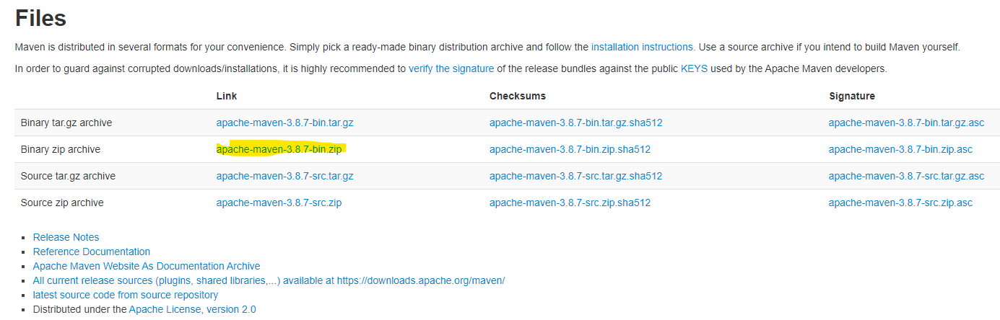
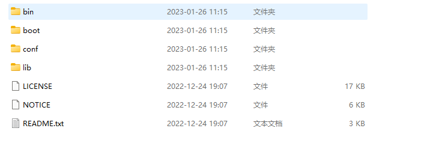
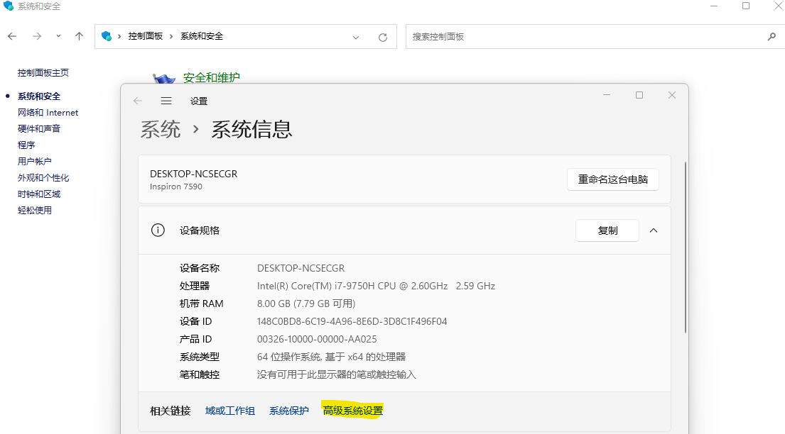
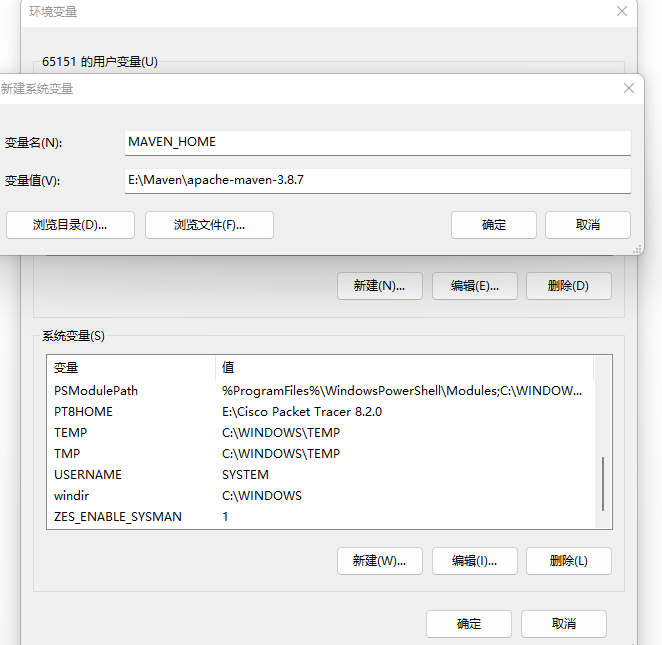
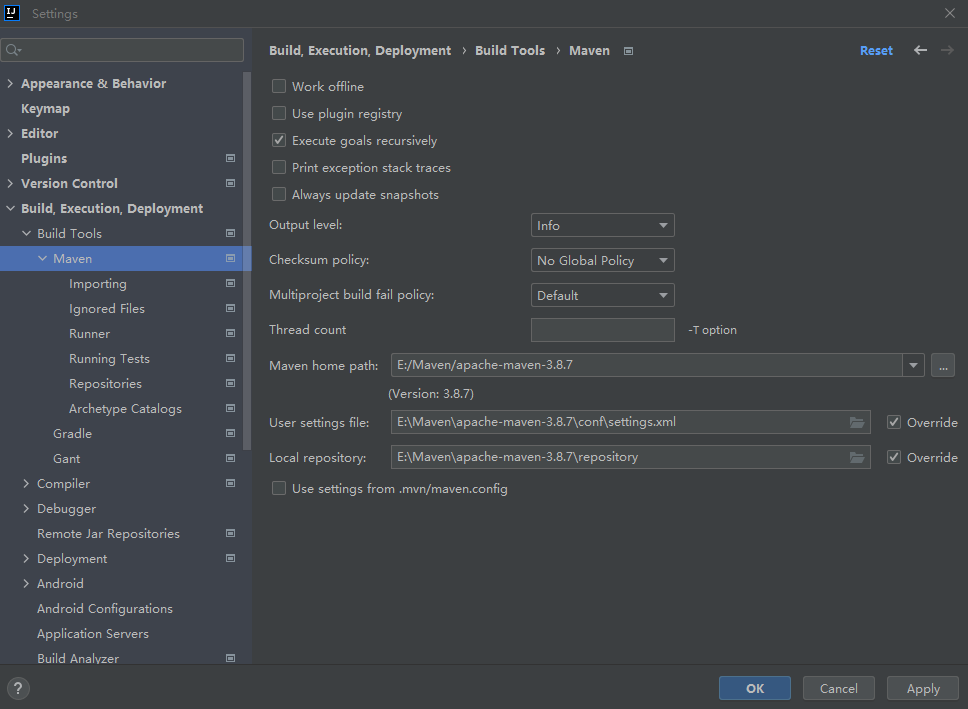

Windows
下载地址
maven下载地址如下，各位请选择对应系统的maven版本进行下载。
https://maven.apache.org/download.[cgi](https://so.csdn.net/so/search?q=cgi&spm=1001.2101.3001.7020)

解压maven安装包
maven安装包下载之后，对其进行解压。解压后的文件，各文件作用如下图所示：

配置环境变量
我们使用的很多开发工具，比如jdk、tomcat等，都是需要配置环境变量的，maven也不例外，其配置过程如下。
1. 配置maven环境变量

设置环境变量时，可以创建一个叫做”MAVEN_HOME“的系统变量名称，值是maven文件夹路径

2. 测试maven是否配置完毕
输入mvn -v命令，如果出现maven版本号，就表明安装成功。
配置Maven
